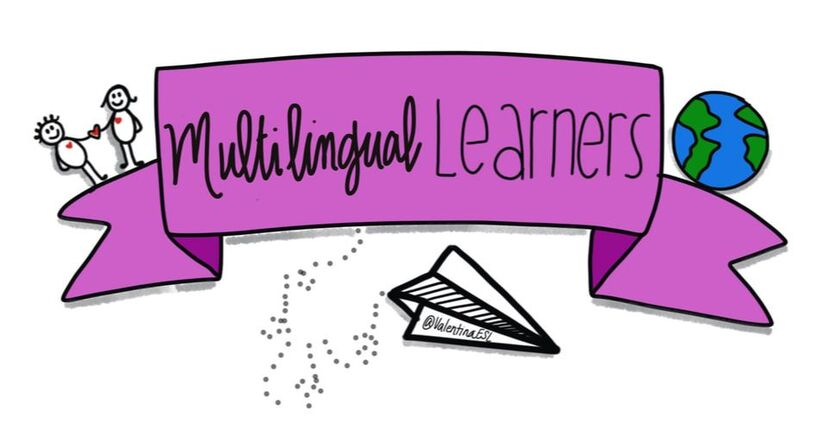

| New Reads for Primary | New Reads for Intermediate |
| ALA 2025 Notable Children's Books - ALA Top 3: Abuelo, the Sea, and Me, Adela's Mariachi Band, Ahoy! | ALSC 2025 Summer Reading List - ALSC Top 3: And Then, Boom!, Bea and the New Deal Horse, Bog Myrtle |
| The Best Picture Books of 2025 - Top 3: The Baby Who Stayed Awake Forever, 100 First Words (Ms. Rachel), To See an Owl | The Best Middle Grade & Chapter Books of 2025 - Top 3: Amina Banana and the Formula for Friendship, A Song for You and I, Halfway to Somewhere |
|
Sign up for E-Newsletters created specifically for librarians by clicking the image! |
|
|  |
Click the image to visit the International Children's Digital Library. Here you can access a variety on digital books for multilingual learners! |